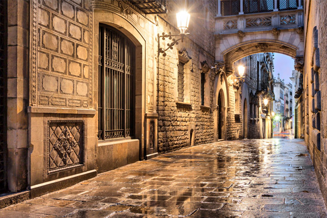
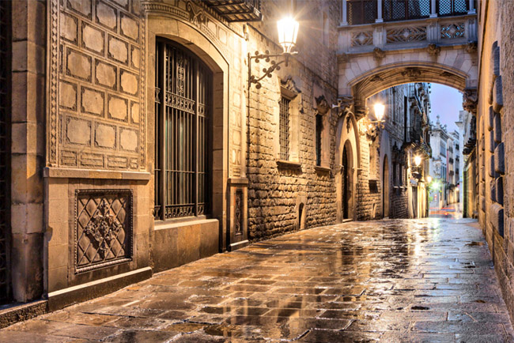

Visita
els racons més icònics de Barcelona i viu una experiència inoblidable
els racons més icònics de Barcelona i viu una experiència inoblidable
Barcelona és una ciutat cosmopolita situada a la costa mediterrània de Catalunya, famosa per la seva arquitectura modernista i la seva vibrant vida nocturna.
Aprèn + 

Benvinguts a la pàgina web de l'Ajuntament de Barcelona, on podràs trobar informació útil i rellevant sobre els serveis que oferim als ciutadans i visitants de la nostra ciutat.
Des d'aquí podràs conèixer les zones més icòniques de Barcelona així com accedir a la seva informació més detallada i actualitzada, estant al dia de les notícies i activitats que es produeixen en l'àmbit municipal.
A l'Ajuntament de Barcelona treballem per garantir una ciutat més sostenible, accessible i inclusiva, que promogui la convivència i el benestar de totes les persones que l'habiten. Esperem que aquesta pàgina web sigui una eina útil i eficaç per apropar els nostres serveis a la ciutadania i fomentar la participació activa en la construcció d'una Barcelona millor.